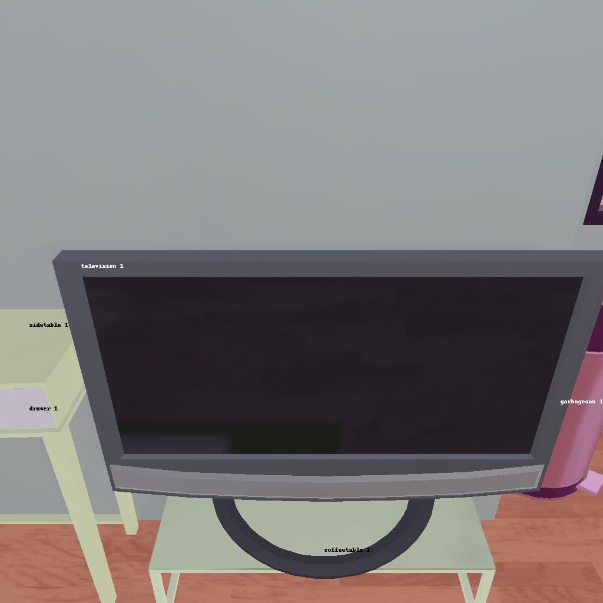
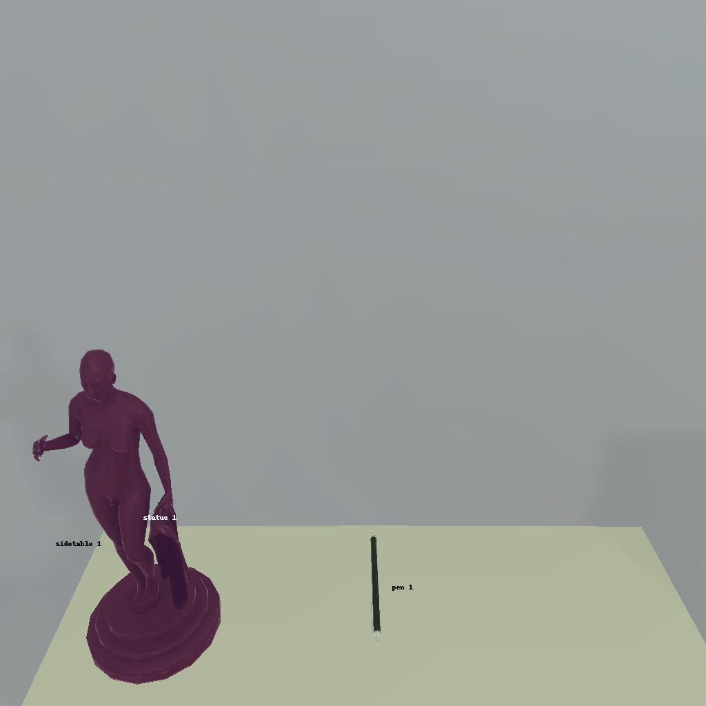

---------------------------------------------------------task: 4---------------------------------------------------------
--------------------------------------------------------------------------------------------------------------------------------------------------------------------
--------------------------------------------------------------------------------------------------------------------------------------------------------------------
Step:--------------------------------------------------------------------------2-------------------------------------------------------------------------------
----------------------------------------
VLM Prompt:
Image1:
Image2:
Image3:
**Instruction**
1. Analyze the provided image to identify all visible household objects, focusing on those relevant to the task description "look at statue under the floorlamp."
2. Use the analysis of the image and the task hint "The agent must find an object of the desired type, locate and turn on a light source with the desired object in-hand." to answer the question: what is the most reasonable action in the choices for the task description "look at statue under the floorlamp"?
4. Decide and write the answer using the template: The answer is: (i): , where i is the real number. If there is no desired object in the image, search every place based on **Initial Observation** to find the object. And if no one is exactly correct, choose a similar answer.
**Initial Observation**
You are in the middle of a room. Looking quickly around you, you can see armchair (1), coffeetable (1-2), sidetable (1), garbagecan (1), drawer (1), sofa (1), diningtable (1)
**Answer Choices**
(1): go to armchair 1
(2): go to garbagecan 1
(3): go to drawer 1
(4): go to sofa 1
(5): go to coffeetable 2
(6): go to diningtable 1
(7): take statue 1 from sidetable 1
(8): take pen 1 from sidetable 1
(9): examine sidetable 1
**Answer**
Let's think step by step by following the instructions.
----------------------------------------
----------------------------------------
Original Response:
First, we need to identify all visible household objects related to the task "look at statue under the floorlamp." In the provided images, we can see a sidetable (image 3) with a statue (image 3) on it. There is no floorlamp visible in the images, but based on the initial observation, we know there is one in the room.
Next, according to the task hint, the agent must find an object of the desired type, which is the statue, then locate and turn on a light source with the desired object in-hand. Since the task is to look at the statue under the floorlamp, the most reasonable action is to first take the statue.
Among the provided answer choices, the action that aligns with these steps is (7): take statue 1 from sidetable 1. This action allows the agent to acquire the desired object, which is the statue, and then the agent can proceed to find and turn on the floorlamp.
The answer is: (7): take statue 1 from sidetable 1.
----------------------------------------
----------------------------------------
>>> Refine Original VLM Response and Get Pure Action: take statue 1 from sidetable 1
----------------------------------------
-----------------------------------------------------------------
Running time: 13.984925746917725 seconds
Total Money: 1.8906399999999999
-----------------------------------------------------------------
-----------------------------------------------------------------
Text Observation:You pick up the statue 1 from the sidetable 1.
-----------------------------------------------------------------
UNSUCCEED